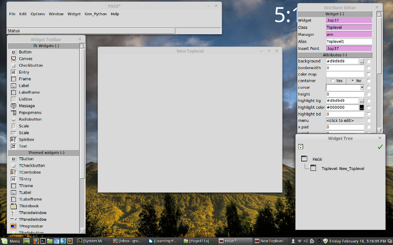

Welcome to TheDesignatedGeek web site, a place where you can find information about
my current projects, books, articles in Full Circle Magazine and more.
My site is currently using the Prologue Jekyll Theme which is free.
You can find more on the Prologue theme at Chris Bobbe's site on GitHub!
I'm in the process of trying to migrate from the old GitHub.io page to a new one. Things might not work correctly, so please be patient and check back often.
I'm still in the process of creating this site, so you might want to visit often so see what changes I end up making. This also means that there might be somethings that are broken here and there. If you see something that doesn't work correctly, please use the contact section below and let me know.
Portfolio
Here you will find a few of the photos I've taken. Can you tell that I like clouds?

Cool storm in southern Colorado 2006

Another storm in southern Colorado 2006

Interesting Sunset

Strange Clouds
Full Circle Magazine
Full Circle Magazine is a free, independent, monthly PDF magazine dedicated to the Ubuntu family of Linux operating systems. Each month, it contains helpful how-to articles and reader submitted stories.
As of May 26, 2018 there are 133 issues of Full Circle Magazine all available for download as PDF files and many as epub format files as well.
The kind folks at FCM have also created a series of special editions of reprints of the Python series written by me that includes Parts 1-60 from FCM#27 through FCM#102 in a single PDF here. These were the “Beginning Programming in Python” series.
Other files in the Python Special editions can be found here.
Parts 1 through 10 includes the same content as the first link but in separate PDF files as well as parts 60-66 and 67-72 in volumes 11 and 12 which covers most of the Python in the REAL world series. For parts 73 to current, you can download the single FCM issues here
In addition to my Python special editions, there are special editions dealing with Inkscape, FreeCAD, The Command & Conquer series, LibreOffice, Using Gimp and many more! You can find the Special Editions Page here.
Page
I’ve written about Page a number of times over the years (since 2012 actually), and I love it. Page is a Drag-and-drop GUI (Grapical User Interface) designer for Python using Tkinter that is written by Don Rozenberg. Page creates Python files Page has been around many years and is currently at version 4.13. It features Graphical menus, notebook widgets and panedwindow widgets. It supports most Tk and many ttk widgets and is very easy to use. Don has written a large number of examples and some very good documentation for Page.

You can find Page HERE at https://sourceforge.net/projects/page/
About Me

My name is Greg Walters and I have been a programmer since 1972. I am currently retired and living
in Central Texas, USA. I currently write (somewhat due to medical problems) monthly articles for
Full Circle Magazine
and have since issue #27 back in July 2009.
My latest article can be found in issue #133 (May 2018).
I am also an author, amature photographer, fair musician and a pretty darn good cook.
I ocassionally do custom tutorials for various people and projects, the latest of which
is for Page which is a free GUI designer for Python.
My tutorial can be found in the /docs folder of the latest Page release.
I am currently writing a book on using Page which will hopefully be published in
late 2018 or 2019. At this point, I'm planning on it having between 10 and 15 chapters
and being about 450 pages long.
Contact
This form will (hopefully, since it isn't tested yet) allow you to send me an email.
Just enter your name, your email and a short message, then click the [<]submit] button.
I should be able to get back to you (assuming that I'm awake) fairly shortly.